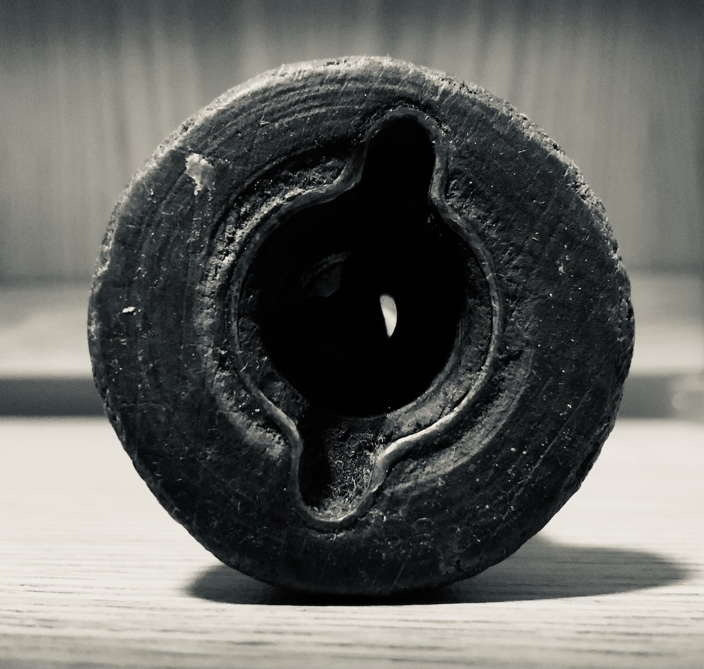
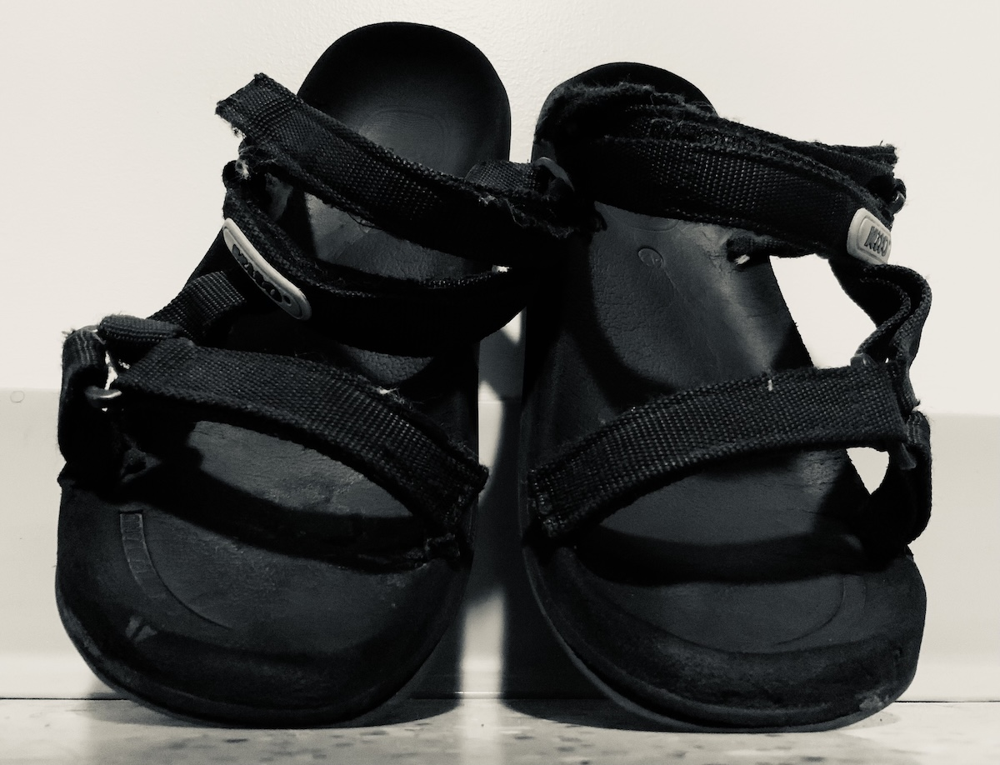
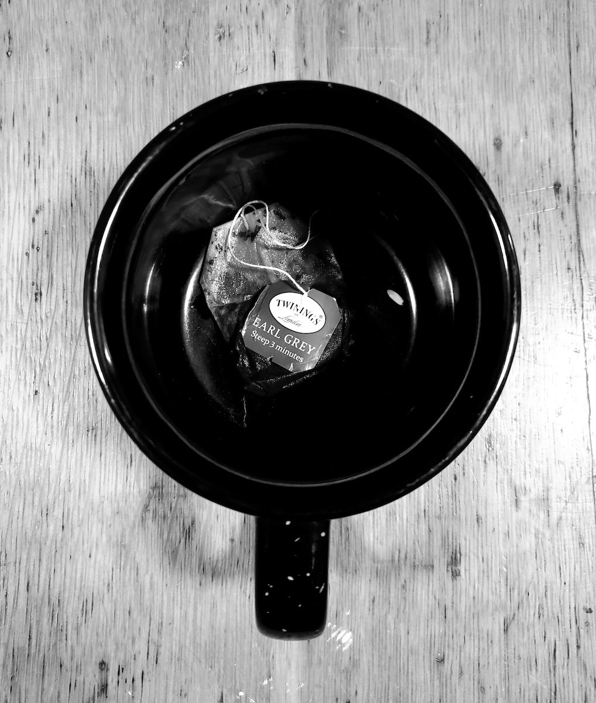

Holes
Inspired by a class on how to mathematically count the number of holes, I studied holes in this photographic project. Accessible holes in a handle. Non-accessible holes in a fan. Deceiving “holes” in a cup and a glass case. Holes that hold our feet.



